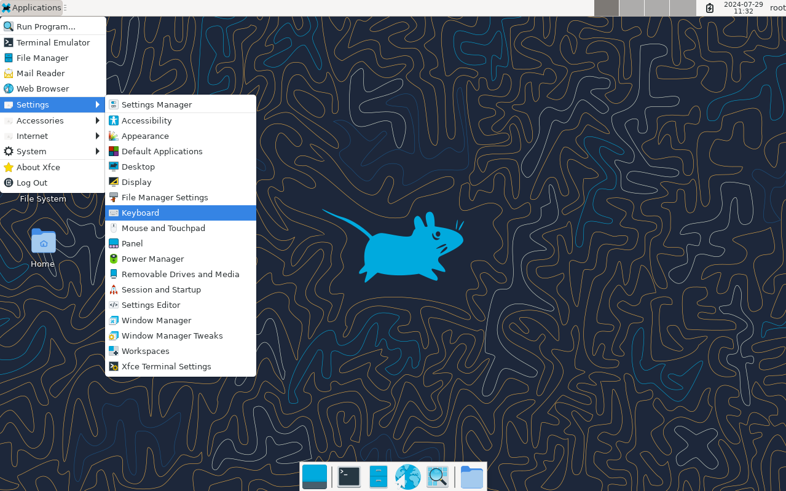

A seguinte secuencia de capturas mostra a configuración inicial de Alpine Linux 3.20 coas accións que hai que realizar en cada paso.
- Desde VirtualBox inicia a VM na que instalaches Alpine na primeira parte da práctica. Inicia sesión co usuario root e o contrasinal que configuraches (seguramente "icap" sen as aspas).

- Vamos instalar un ambiente gráfico de escritorio (Graphical User Interface, GUI) na VM. Alpine, ao igual que acontece con outros Linux, soporta diferentes GUI. Nós vamos instalar Xfce xa que non demanda demasiados recursos, polo que é unha boa opción para unha VM. Para instalar Xfce, executa o comando setup-desktop xfce.
NOTA: O proceso de instalación leva un cacho xa que ten que descargar e instalar máis de 300 paquetes. Paciencia.

- Reinicia a VM executando o comando reboot.
- Agora a VM xa se inicia automaticamente no modo gráfico. Inicia sesión de novo co usuario root e o contrasinal que configuraches. Ten en conta que debido a un problema en Xfce coa configuración do teclado, ao escribir o contrasinal no diálogo de inicio de sesión as teclas interprétanse igual que nun teclado americano (p.ex. o guión escríbese premendo a tecla que está á dereita do 0). Non tería que supoñer un problema xa que o contrasinal non debería ten caracteres "raros" se seguiches as instrucións durante a instalación de Alpine (seguramente o teu contrasinal sexa "icap" sen as aspas).

- Unha vez iniciada a sesión accedemos ao ambiente de escritorio de Xfce.

- Configura o teclado.
Accede a Applications->Settings->Keyboard

Na lapela Layout desactiva a opción Use system defaults e engade unha nova configuración para o teclado na primeira posición da listaxe. Ten en conta que debido ao problema comentado anteriormente, esta configuración parece funcionar só dentro da sesión Xfce pero non no diálogo de inicio de sesión. Nas capturas vese un exemplo para un teclado con teclas de Windows.
IMPORTANTE: asegúrate de eliminar a configuración por defecto en Inglés do teclado (como se ve na captura seguinte) antes de pechar o diálogo.

- Crea a túa conta de usuario. Abre un terminal e executa o comando setup-user -a. Como xa configuramos o teclado en español, o carácter guión xa debería estar na súa tecla correspondente.
IMPORTANTE: debes usar as tuas iniciais como nome para o login seguido do curso actual. Exemplo: o alumno Roberto Rey Expósito no curso 2025/2026 creará un usuario con login rre2526 (véxase a captura). Pon tamén o teu nome e apelidos completo na segunda das preguntas que fai o comando. Aínda que teñamos o teclado configurado en español na sesión Xfce, para o contrasinal, non uses caracteres "raros" para o contrasinal do teu usuario porque no diálogo de inicio de sesión o teclado seguirá configurado en inglés como xa se comentou. De novo, recoméndase usar un contrasinal sinxelo como "icap" (sen as aspas). Para a chave SSH do usuario (última pregunta) acepta sen escribir nada a opción por defecto.
- Reinicia a VM executando de novo o comando reboot e agora inicia sesión co teu novo usuario.

IMPORTANTE: antes de continuar tes que configurar de novo o teclado para o teu usuario da mesma forma que fixemos antes.
- Xfce non instala por defecto un editor de texto, polo que vamos a instalar un. Abre un terminal e executa o comando apk add mousepad.

O comando amosa un erro indicando que non temos os permisos suficientes (Permission denied) para instalar software. O noso usuario pode executar comandos con permisos de administrador (é dicir, como usuario root) poñendo o comando doas diante. Esta funcionalidade foi configurada automaticamente durante a creación da conta de usuario (concretamente, a opción -a do comando setup-user habilitou esta configuración).
- Repite o comando anterior poñendo doas diante para executalo con permisos de administrador (como usuario root). Terás que introducir o contrasinal do teu usuario.

Unha vez instalado podes abrilo desde Applications->Accesories->Mousepad

- Agora podes curiosear o que queiras no ambiente de escritorio. Unha vez remates de curiosear tes que sacar a captura para a memoria de xustificación da actividade tal e como se indica no PDF da práctica 0.